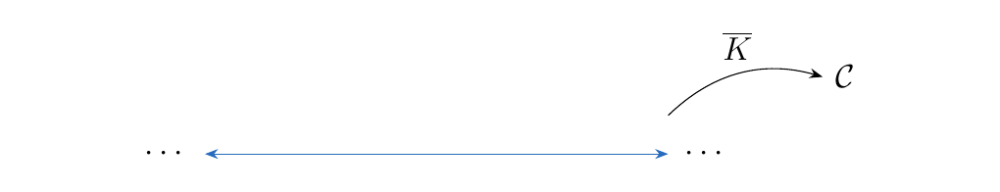
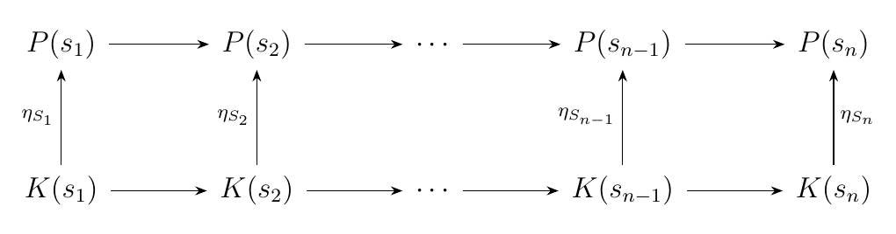
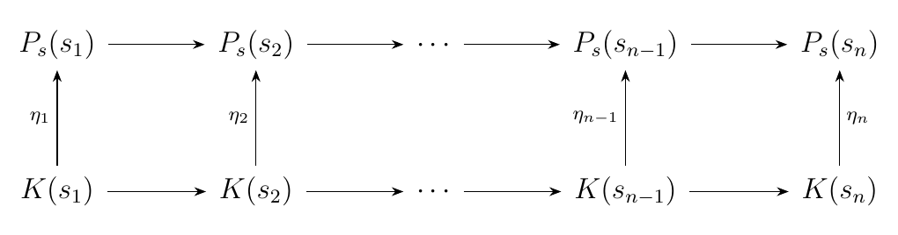
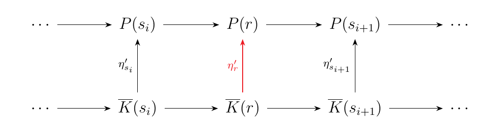
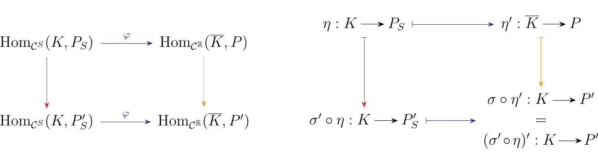
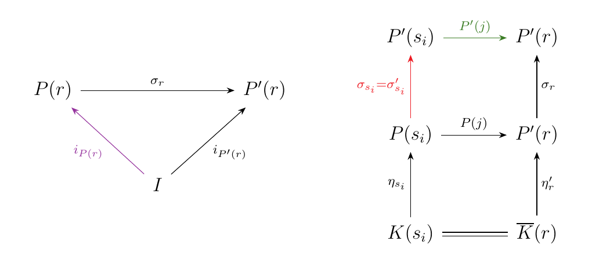

11.1. Persistence modules on \(\rr\).
Let \(\cc\) be a category, and denote \((\rr, \le)\) to be the poset category on \(\rr\) with respect to the natural relation \(\le\). We define a functor \(F: (\rr, \le) \to \cc\) to be a persistence module.
Thus we can say that a persistence module is an element of the functor category \(\cc^{\rr}\).
A persistence module allows us to model the evolution of objects within some category \(\cc\). For example, if we have some ascending chain of vector spaces
 then we say that such a chain is a persistence module since it can
be modeled as a functor from \(\rr \to **Vec**\).
then we say that such a chain is a persistence module since it can
be modeled as a functor from \(\rr \to **Vec**\).
Let \(S = \{s_1, s_2, \dots, s_n\}\) be a finite subset of \(\rr^n\). Then we can describe
an adjunction
\
s follows. First observe that since \(S \subset \rr\), there exists
a restriction functor
\(R: \cc^{\rr} \to \cc^{S}\), which acts as a restriction (hence the naming \(R\)):
How can we write a functor going in the opposite direction? That is, given a persistence module which acts on \(S\),
\ s there a canonical way to extend this to a persistence module which acts on the rest of \(\rr\)? \  One way we may extend a persistence module \(K: S \to \cc\) in \(\cc^S\) to a persistence module in \(\cc^{\rr}\) is to define a functor \(\overline{K}: \rr \to \cc\) where
Now consider a morphism \(\eta: K \to P\) in \(\cc^{S}\); that is, a natural transformation. By our above procedure we have a way of discussing the objects \(\overline{K}\) and \(\overline{P}\); but can we obtain a natural transformation \(\overline{\eta}: \overline{K} \to \overline{P}\) from \(\eta\)? That is, may we extend this relationship to a functor?
First, observe that we may write \(\eta: K \to P\) as follows.
\

he top and bottom rows come about by functoriality of \(K\) and \(P\),
while the upward arrows are the family of morphisms created by the existence
of a natural transformation.
We can extend this to a natural transformation \(\overline{\eta}: \overline{K} \to \overline{P}\) by stating
\subsection*{Adjoint Functors}
Thus we see that we really do have a functor \(\cc^{S} \to \cc^{\rr}\) on our hands If we denote this as a functor \(E: \cc^{S} \to \cc^{\rr}\), where \(E\) can be read as extends, then we overall have \ e can now demonstrate that this pair of functors gives rise to an adjunction; there a few ways to do this. We'll demonstrate that
is natural, where \(P_S = \text{R}(P)\) and \(\overline{K} = E(K)\). Towards this
goal, consider a morphism \(\eta: K \to P_S\). Then we have something like this
again
\

ow we seek a natural transformation \(\eta': \overline{K} \to P\). Since \(\overline{K}\)
is constructed from \(K\), a good choice would be to write
\(\eta'_{s_i} = \eta_{s_i}\) for \(s_i \in S\).
Now our concern is considering how to define \(\eta'_r\)
when \(r \not \in S\). That is, we want something like
\

o define the morphism in red, we first recall that in
this situation we have \(K(r) = K(s_i)\). Hence we know that any morphism
from \(K(r)\) must originate from \(K(s_i)\); one such morphism we already know
about is \(\eta_{s_i}: K(s_i) \to P_s(s_i)\). Now, \(P_s(s_i) = P(s_i)\);
and in our case the desired target for \(\eta'\) is \(P(r)\), not \(P(s_i)\). However,
we can compose this with the morphism \(P(j): P(s_i) \to P(r)\).
where \(j : s_i \to r\).
\
 herefore, in this case we define
herefore, in this case we define
which necessarily forces commutativity, and hence demonstrating naturality of \(\eta'\). Now what if \(r < s_1\) or \(s_n < s\)? In the first case, \(K(r) = I\), and \(\eta'_r\) becomes the unique morphism from \(I \to P(r)\). \textcolor{NavyBlue}{This presents one benefit of adding the criteria \(K(r) = I\) if \(r < s_1\)}. By uniqueness of this morphism we get a commutative square. In the second case, we proceed as above. Therefore
Therefore, we can define a map \(\textcolor{Blue}{\phi}: \hom_{\cc^S}(K,P_S) \to \hom_{\cc^{\rr}}(\overline{K}, P)\) where
Consider the map \(\psi: \hom_{\cc^{\rr}}(\overline{K}, P) \to \hom_{\cc^S}(K, P_S)\) where
where we set \(\sigma'_s = \sigma_s\). While this map is particularly boring, we're discussing it because we can now see that \(\psi\) and \(\phi\) are inverses of each other. Therefore, we see that we have a bijection between the hom-sets, as desired.
\subsection*{Naturality.}
Finally, we must demonstrate naturality. So suppose we have a natural transformation
\(\alpha: K \to K'\) between two persistence modules \(K, K' : S \to \cc\).
Consider the squares below, which we do not yet know commutes.
\
 Note that on one hand,
Note that on one hand,
and
so that
Since we know that \(\big(P(j: s_i \to r)\circ \eta \big)\circ\alpha = P(j: s_i \to r) \circ (\eta \circ \alpha)\). Thus we see that the previous squares we discussed do in fact commute.
Now suppose we have a natural transformation \(\sigma: P \to P'\) between two functors \(P, P': \rr \to \cc\). Consider the diagrams below, which we will show are commutative. \  o show this, observe that
The diagrams below can assist to seeing why this is the case. First,
the change in \textcolor{Purple}{purple} occurs by commutativity of the diagram on the left; the commutativity
results due to the universal nature of morphisms originating from the initial object \(I\). Second,
the changes in \textcolor{OliveGreen}{green} and \textcolor{Red}{red}
occur by commutativity of the diagram on the right.
\

hus we see that our original squares are commutative. At this point, we can conclude that
we do in fact have an adjunction
\
 s desired.
s desired.